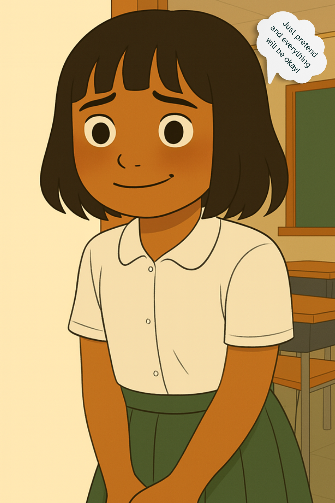

🏠 홈으로 돌아가기
😐 장면 2 – 벨라는 괜찮은 척해요
벨라는 깊게 숨을 들이쉬고 미소를 지었어요.
하지만 속으로는 아직도 긴장되고 무서웠어요.
아무에게도 말하지 않고, 그냥 괜찮은 척했어요.

“아무도 모르게… 난 괜찮은 척할 수 있어.”
👪 부모를 위한 팁:
아이들은 때때로 감정을 숨기기 위해 괜찮은 척을 해요.
아이가 감정을 안전하게 표현할 수 있도록 도와주세요.
✨ 시도해 보기
😞 기회를 놓쳐요